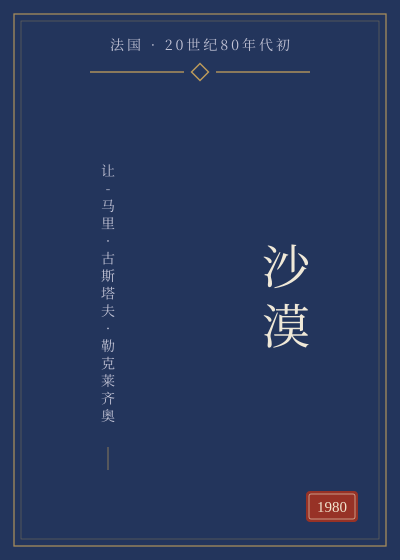
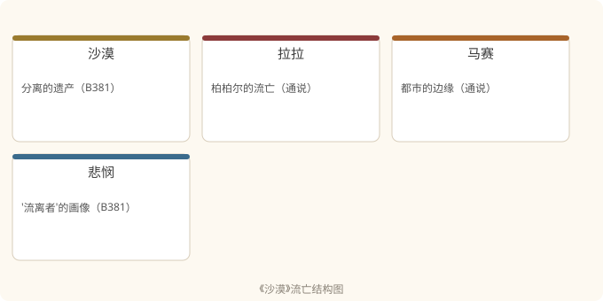

沙漠
一、基本信息
| 作者 | 让-马里·古斯塔夫·勒克莱齐奥 |
|---|---|
| 成书/出版 | 1980年（Britannica B381：Désert (1980)——法兰西学院保罗·莫朗大奖） Jean-Marie Gustave Le Clezio — Encyclopaedia Britannica（百科全书） |
| 国别/地区 | 法国 |
| 时代 | 现当代 · 20世纪80年代初 |
| 体裁 | 长篇小说 |
| 语言 | 法语 |

《沙漠》流亡结构图（主题·结构图）
二、创作背景
Britannica（B381）：Désert——主角'a North African Berber separated from her past and her cultural inheritance'。
Britannica（B381）：'a compassionate and evocative portrayal of the disenfranchised and displaced in search of meaning, identity, and reintegration'。
Britannica（B381）：勒克莱齐奥——2008诺奖；'emerged independently from contemporaries of the nouveau roman'。
三、内容脉络
（通说待核——B381未载剧情）拉拉：北非沙漠的逃婚与马赛的流亡。
（通说待核）'沙漠'的 blue men 与现代都市的对照。
四、主要人物表
| 人物 | 身份 | 说明 |
|---|---|---|
| 拉拉 | 柏柏尔少女 | （通说待核，B381未载） |
五、主题与艺术特点
- '与过去和文化遗产分离'（B381）。
- 流离失所者的身份追寻（B381：in search of meaning, identity, and reintegration）。
- 沙漠与都市的双声（书名语境——通说待核）。
六、影响与评论
- Britannica：保罗·莫朗大奖（B381）。
Jean-Marie Gustave Le Clezio — Encyclopaedia Britannica（百科全书） - Britannica：2008诺奖（B381 交叉）。
Jean-Marie Gustave Le Clezio — Encyclopaedia Britannica（百科全书）
七、阅读建议
难点
- 柏柏尔文化背景。
- 双线结构（通说待核）。
- 《沙漠》中译本（人民文学等——通说待核）。
- 法文原版。
勒克莱齐奥代表作；与《诉讼笔录》对读。
八、待核实
- 拉拉人名核对（通说）。
- 1980年出版细节待核。
- 双线（沙漠/马赛）结构待核。